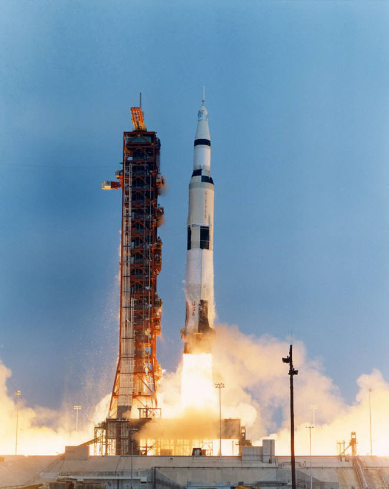
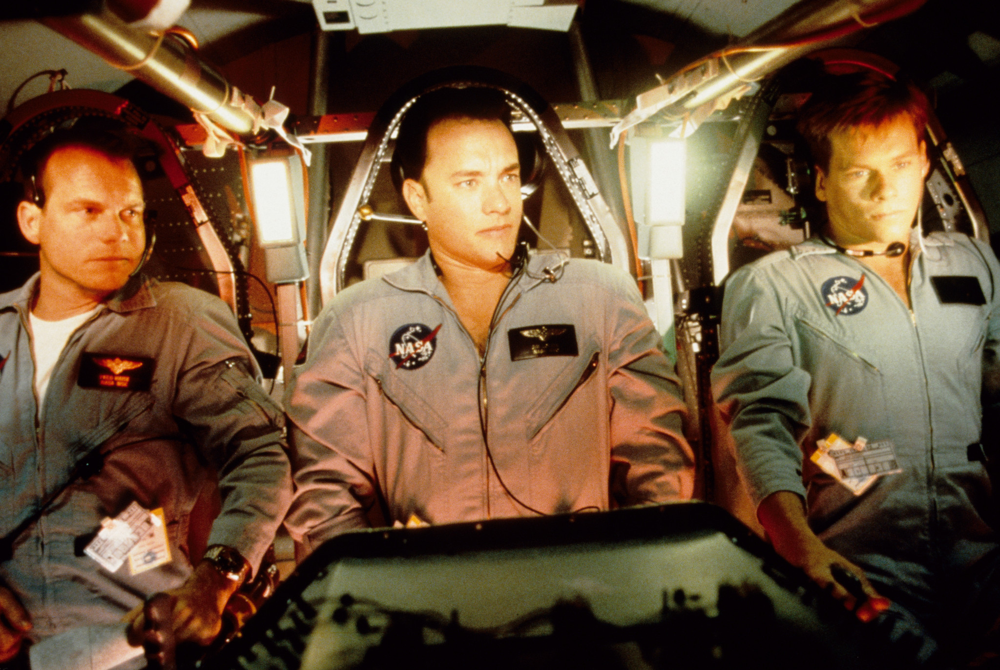
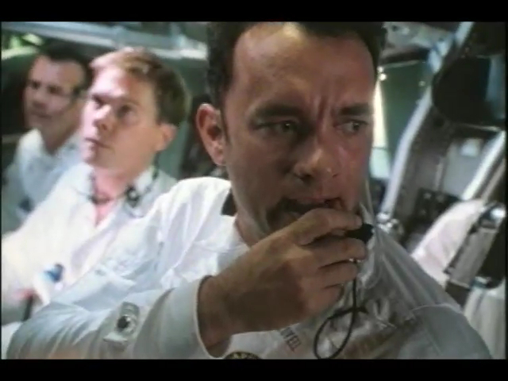

“사람 일은 몰라요,
세 번의 우주비행을 해낸 노련한 42세의 우주비행사 짐 러블은 1969년 7월 20일,
동료 닐 암스트롱의 역사적인 달 착륙 장면을 TV로 지켜보며 '반드시 달에 가보고 말리라'는
자신의 꿈을 다시 한번 아프게 가슴에 새긴다. |
그러나 발사 이틀을 남기고 예비 탑승팀에 홍역환자가 발생해 아직 홍역을 앓지 않은 켄이 전염됐을지도 모른다는 이유로 팀에서 제외된다.
대신 예비 탑승팀의 일원이며 신참내기인 잭 스와이거트가 사령선 조종사로 팀에 새로 합류한다.
지상에 남게 된 켄은 분루를 삼키며 허탈감에 빠진다. 드디어 발사일, 새턴 5호 로켓에 실린 아폴로 13호가 어마어마한 화염을 일으키며 하늘로 솟아오른다. 마침내 달 탐험의 여정이 시작된 것이다. 지구 궤도를 이탈해 달을 향한 비행을 시작하고, 달착륙선과 도킹까지 무사히 마친 비행사들이 달 궤도 진입에 앞서 휴식을 취하려는 순간, 난데없는 폭음과 함께 우주선이 요동하기 시작한다. 산소 탱크 안의 코일이 전기 합선으로 감전을 일으켜 폭발한 것.  “Houston, we have a problem.” 막막한 우주에서 한치의 오차는 죽음을 의미하기 때문에 문제가 생겼다는 보고는 곧바로 NASA(美항공우주국)와 미국을 긴장속으로 몰아넣었다.
|

전력의 많은 부분을 상실한 사령선을 재진입시 활용하기 위해 사령선은 일시 폐쇄하고 착륙선을 구명정으로 삼아 지구 재진입 지점까지 운항하기로 결정한다. 극한의 생존기. 희망을 버리지 마라. 인생은 한치 앞도 내다볼 수 없기에 삶의 소중함을 알게 된다. 우주 개발 역사상 “가장 성공적인 실패”. 이들은 산소와 물, 수산화리튬 부족 그리고 저전력 등 극한 상황을 딛고 다시 사령선을 이용해 4월 17일 무사히 태평양에 착륙했다. 우주 역사상 ‘성공적인 실패’라고 꼽히는 사건이다. 아폴로 13호는 비록 달 착륙에는 실패했지만, 팀원들간의 끈기와 지혜, 그리고 동료애가 얼마나 위대한 결과를 만들어낼 수 있는지 보여주는 사례다. <아폴로 13>은 론 하워드의 친딸 '브라이스 댈러스 하워드'의 데뷔작이기도 한데, 재미난 점은 극 중에 톰 행크스의 딸로 출연했다는 점이다.  |